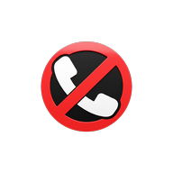

Não me Ligue
Sua paz vale muito.
Aplicativo para Android que silencia automaticamente as chamadas de números que não estão salvos na sua agenda — telemarketing, golpes e ligações indesejadas.
Baixar na Google PlayComo funciona
- Seus contatos tocam normalmenteQuem está salvo na sua agenda, serviços de emergência e números curtos sempre podem te ligar.
- Desconhecidos são silenciadosChamadas de números fora da agenda não tocam e ficam registradas no histórico do app.
- Privacidade: tudo no seu celularA verificação das chamadas é feita no próprio aparelho. Seus contatos e suas ligações não são enviados para servidores.
Login com Google
O app usa o login com Google apenas para identificar sua conta e manter sua assinatura Premium ao trocar de celular. Usamos somente seu nome e e-mail.